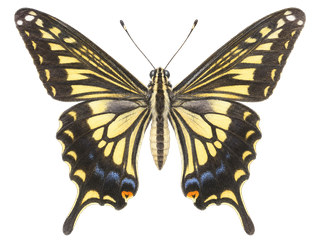

Papilionidae · 001
এশীয় সোয়ালো-টেল
Papilio xuthus
হালকা হলুদ ডানায় কালো রেখা এবং পেছনের ডানায় লেজের মতো অংশ থাকে। মানুষের বসতির কাছেও দেখা যায়। বাগান, সমতলের ক্ষেত ও লেবুগাছযুক্ত বনপ্রান্ত। Papilio machaon থেকে আলাদা করতে সামনের ডানার গোড়ার নকশাও দেখুন; শুধু হলুদের গাঢ়ত্ব যথেষ্ট নয়। মূল নকশা স্ত্রী-পুরুষে কাছাকাছি। শুধু রঙ নয়, উদরের শেষভাগের গঠনও দেখুন। শূককীট লেবুজাতীয় ও অন্যান্য Rutaceae উদ্ভিদের পাতা খায়। ছোট অবস্থায় পাখির বিষ্ঠার মতো, পরে সবুজ হয়।
বিস্তারিত পড়ুন →